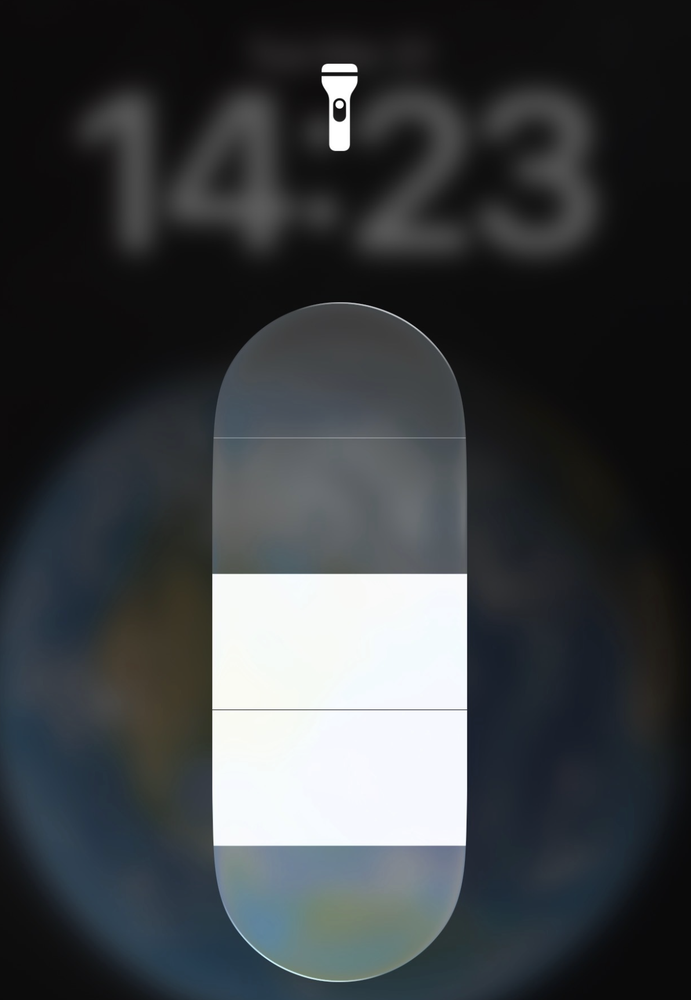

<div class="textcontainer">
<p class="margin"> </p>
<h3>Week 6: Electronic Inputs</h3>
<h4>Assignment 1: Capacitive Sensor · Water Level</h4>
<p class="margin"> </p>
<p><em>O'BLOWMETER</em></p>
<img src="./O'Blowmeter.png" alt="O'Blowmeter" style="max-width: 100%; height: auto;">
<p class="margin"> </p>
<p><em>SENSOR TEST</em></p>
<video src="./Sensor Test.MOV" controls style="max-width: 100%;"></video>
<p class="margin"> </p>
<p><strong>Documentation:</strong></p>
<pre class="margin">
For the capacitive sensor, the project felt pretty intuitive. It was cool to touch the two copper plates together and see the readings change, as they were directly tracking the distance—or the connectivity—between the two.
Earlier in the week we learned about several other kinds of sensors (including one I explore in the second half of this page), but the capacitive approach seemed the coolest.
What I did first was try to make a sensor that would test wind speed. The O'Blowmeter was the result: a structured cardboard base that would hold one half of the capacitive sensor still while the other half was
anchored more loosely so it could move. You can see in the video above the movement and the readings. As the sensor is blown by the wind, the reading rises as the halves approach. In reality, this was
easier said than done, and there were other implementations that would have suited us better. Mostly, this was because we got a binary result: wind high or wind low. We then sent the output to a
buzzer. Eventually, we decided to shift focus and use the sensor to detect water level. The water-level setup was a bit more straightforward, and I was able to get a reading that was more or less linear with the water level. We measured at centimeter marks from 0–8 cm, and instead of using the buzzer for a simple high/low, we used it to signal the start of an event where the water level is rising (think flood alarm, or something like that).
Below is the graph from that experiment; the values are averages from the serial monitor. The graph shows the relationship between the microcontroller reading and the water level.
</pre>
<p class="margin"> </p>
<p><em>WATER LEVEL</em></p>
<img src="./Water Level.png" alt="Water level" style="max-width: 100%; height: auto;">
<p class="margin"> </p>
<p><em>CALIBRATION PLOT & TABLE</em></p>
<div class="week6-calibration-panel">
<div id="week6-water-chart" class="week6-chart-host" aria-label="Water level vs sensor reading"></div>
<table>
<thead>
<tr><th>step</th><th>level_reading (raw)</th></tr>
</thead>
<!-- Keep rows in sync with week6_capacitive_readings.csv (chart loads from CSV). -->
<tbody>
<tr><td>0</td><td>105924.8</td></tr>
<tr><td>2</td><td>195608.55</td></tr>
<tr><td>4</td><td>301980.25</td></tr>
<tr><td>6</td><td>365238</td></tr>
<tr><td>8</td><td>392178.7</td></tr>
</tbody>
</table>
</div>
<p class="margin"> </p>
<p>Data file: <a href="./week6_capacitive_readings.csv">week6_capacitive_readings.csv</a>.</p>
<p class="margin"> </p>
<p><em>ARDUINO CODE</em></p>
<pre><code style="user-select: all; display: block; padding: 1em; background:#000000; color: #ffffff; border-radius: 4px; overflow-x: auto;">
long result; // variable for the result of the tx_rx measurement.
int analog_pin = D0;
int tx_pin = D1;
int calibratedCutoff = 200000;
const int buzzer = D2;
void setup() {
pinMode(tx_pin, OUTPUT); // Pin provides the voltage step
Serial.begin(9600);
pinMode(buzzer, OUTPUT);
}
void loop() {
result = tx_rx();
Serial.println(result);
if (result >= calibratedCutoff) {
Serial.println("Filling");
analogWrite(buzzer, 127);
delay(1000);
analogWrite(buzzer, 0);
} else {
Serial.println("Water Level Low");
}
}
long tx_rx() { // rx_tx-style read: coupling between two electrodes
int read_high;
int read_low;
int diff;
long int sum;
int N_samples = 100; // more samples → smoother, slower
sum = 0;
for (int i = 0; i < N_samples; i++) {
digitalWrite(tx_pin, HIGH);
read_high = analogRead(analog_pin);
delayMicroseconds(100);
digitalWrite(tx_pin, LOW);
read_low = analogRead(analog_pin);
diff = read_high - read_low;
sum += diff;
}
return sum;
}</code></pre>
<p class="margin"> </p>
<p><strong>Documentation:</strong></p>
<pre class="margin">
The code is shown above and represents how the logic of the sensor works. The more water, the higher the capacitance, as the water makes a better connection. This was interesting because at first I thought
that once the water reaches the bottom of both parts of the sensor, the reading would max out. This is not quite the case, however, and I really liked learning about this. When first considering how to make a water-level reader, I was
thinking that you would have to suspend one part of the sensor in the water on some sort of floating platform and as the water fills, it would rise in height toward another plate above it. This would have been more difficult,
however, and I was interested to see that the sensor could read this way. Overall, it was cool to get this sensor to work, and mapping it to the real world made the practical uses obvious.
</pre>
<p class="margin"> </p>
<h4>Assignment 2: Use + Calibrate Another Sensor</h4>
<p class="margin"> </p>
<p><em>FLASHLIGHT</em></p>
<p></p>
<p class="margin"> </p>
<p><em>SENSOR AND MONITOR</em></p>
<img src="./Sensor and Monitor.png" alt="Sensor and monitor" style="max-width: 100%; height: auto;">
<p class="margin"> </p>
<p><em>LED OUTPUT</em></p>
<video src="./LED%20Output.MOV" controls style="max-width: 100%;"></video>
<p class="margin"> </p>
<p><em>CALIBRATION PLOT & TABLE</em></p>
<div class="week6-calibration-panel">
<div id="week6-a2-chart" class="week6-chart-host" aria-label="Assignment 2 sensor ADC readings"></div>
<table>
<thead>
<tr><th>step</th><th>adc_reading (raw)</th></tr>
</thead>
<!-- Keep rows in sync with week6_assignment2_readings.csv (chart loads from CSV). -->
<tbody>
<tr><td>0</td><td>4095</td></tr>
<tr><td>1</td><td>3560.3</td></tr>
<tr><td>2</td><td>2840.7</td></tr>
<tr><td>3</td><td>2361.2</td></tr>
<tr><td>4</td><td>2187.4</td></tr>
</tbody>
</table>
</div>
<p class="margin"> </p>
<p>Data file: <a href="./week6_assignment2_readings.csv">week6_assignment2_readings.csv</a>.</p>
<p class="margin"> </p>
<p><em>ARDUINO CODE</em></p>
<pre><code style="user-select: all; display: block; padding: 1em; background:#000000; color: #ffffff; border-radius: 4px; overflow-x: auto;">
// The setup routine runs once when you press reset:
void setup() {
// Initialize serial communication at 9600 bits per second:
Serial.begin(9600);
}
// The loop routine runs over and over again forever:
void loop() {
// Read the input on analog pin 0:
int sensorValue = analogRead(A0);
// Print out the value you read:
Serial.println(sensorValue);
delay(1); // Delay between reads for stability
}</code></pre>
<p class="margin"> </p>
<p><strong>Documentation:</strong></p>
<pre class="margin">
The last part of this week's homework was to use another type of sensor and map its readings to real-world quantities as well. I chose light because my iPhone flashlight has four brightness levels I could step through.
Using a photoresistor in a voltage-divider circuit and simple Arduino code reading an analog pin, I recorded the value at each
brightness step. The output device in this scenario is an LED, put in once the serial monitor was reading properly and showing a change when a finger is put over the photoresisitor (indicating a change in light level).A quick Google search suggested the iPhone flashlight spans roughly 30–60 lumens; holding it at a consistent height above the photoresistor gave a repeatable setup that lines up with brightness in a practical way.
This sensor is less interesting to me than the capacitive one, but it may matter more for my final project. I am building a camera—something that depends on light—so understanding how these sensors
respond to what they see is important. The chart is really cool: within some margin of error, the flashlight output increases almost linearly across the steps. It makes me wonder what engineering went into designing it and why the phone's brightness levels are tuned the way they are. Overall, I'm glad I got this sensor working like the first one, and I see how it could carry over into real products.
</pre>
<p class="margin"> </p>
</div>